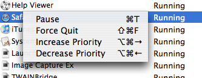

Application Manager Shortcuts
App Stop provides keyboard shortcuts to common operations you can perform in the Application Manager table. You can view the list of actions and shortcuts by right clicking on a application in the table view to bring up the list shown below. The operations below can all be applied to multiple selected applications at the same time.
In addition to the shortcuts shown above you can also access the search field with the keyboard combination ⌘F.
See also
Changing Application's Priority
Searching For a Specific Application
Application Manager Topics